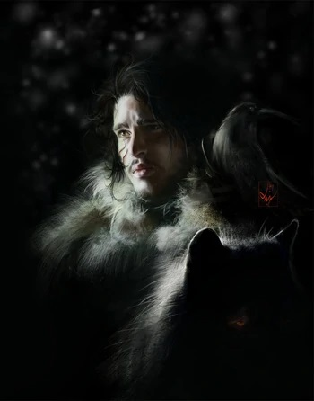
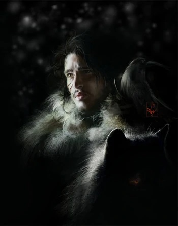

简介
琼恩·雪诺（Jon Snow）可能是艾德·史塔克的私生子，关于其生母则存在诸多推测。他和父亲嫡生的孩子，即琼恩同父异母的兄弟姐妹一起长大，却在接近成年之时加入了守夜人。他的冰原狼白灵通常伴随其左右。在卷一《权力的游戏》开始时，琼恩十四岁。他是书中主要的POV人物之一。
- 英文名
- Jon Snow
- 性别
- 男
- 生日
- 伊耿历283年
- 父亲
- 雷加·坦格利安（生父）、艾德·史塔克（养父/舅舅）
- 母亲
- 莱安娜·史塔克（生母）、凯特琳·徒利（养母/舅妈）
琼恩·雪诺（Jon Snow）可能是艾德·史塔克的私生子，关于其生母则存在诸多推测。他和父亲嫡生的孩子，即琼恩同父异母的兄弟姐妹一起长大，却在接近成年之时加入了守夜人。他的冰原狼白灵通常伴随其左右。在卷一《权力的游戏》开始时，琼恩十四岁。他是书中主要的POV人物之一。

琼恩和他同父异母的兄弟姐妹，即艾德·史塔克嫡生的孩子，一起在父亲的抚养下长大（琼恩成长得更快些）。因此，他有着史塔克家族和北方人的荣誉感，这也使他在面临在道德上复杂模糊的问题时作出与之相符的决定。艾德待琼恩如嫡出，而琼恩也和他同父异母的兄弟姐妹，特别是罗柏和艾莉亚相处愉快。他一直对于自己私生子的身份耿耿于怀，时常感到自己像个局外人，最终决定加入出身并不重要的守夜人军团。而这，也同时意味着他必须要忘记自己的过去。纠结于此良久后，他逐渐明白身着黑衣的责任，选择遵守自己立下的誓言，完全忠于守夜人。
琼恩被认为马术高超且很有剑术天赋。从刚会走路起他就开始接受剑术训练。琼恩比他的哥哥罗柏剑术更好。他一直信仰旧神。
尽管只有十四岁，琼恩却比他同父异母的兄弟姐妹们有更明显的史塔克家族特征。他体格精瘦，脸长，有着黑褐色的头发和一双灰色的眼睛。在加入守夜人后琼恩一直衣着守夜人的黑色斗篷。
琼恩的父母仍然是个谜（详见下面的理论推测），公认的是他出生在篡夺者战争末期，奈德在劳勃反叛之后带着琼恩回来，并执意像抚养其它嫡生子女一样抚养他。
琼恩有一个“同父异母”哥哥罗柏，两个“同父异母”弟弟布兰和瑞肯，两个“同父异母”妹妹艾莉亚和珊莎。他在临冬城的出现和成长导致了艾德公爵和他的妻子，凯特琳之间的摩擦。凯特琳视琼恩为外人，因为他的存在不断提醒着她丈夫的不忠。凯特琳对待琼恩的冷漠，使琼恩常常感到自己不受欢迎。琼恩的相貌与艾德十分相像，甚至超过于艾德公爵其他的嫡生子女，这也加剧了凯特琳对琼恩的憎恶。然而，艾德对待琼恩十分友善，甚至曾在心树下许愿希望罗柏和琼恩能像亲兄弟一般。琼恩和家庭中的其他成员关系也算融洽，而和罗柏、艾莉亚则尤其亲近。
有一次，琼恩在和罗柏玩比剑游戏时试图扮演临冬城公爵，罗柏则指出琼恩不可能是临冬城公爵，因为他是私生子。这成为了琼恩日后的酸楚记忆。他年轻时的偶像是征服多恩的少龙王戴伦一世，希望能像少龙主一般建功立业。这成为了他日后加入守夜人的动机之一。

基特·哈灵顿（Kit Harington），1986年12月26日出生于英国伦敦的阿克顿，英国演员、制片人。毕业于英国皇家中央演讲和戏剧学院。在校期间，他通过饰演舞台剧《战马》中的主角，完成了职业表演处女作。
2011年-2019年，在HBO的电视剧《权力的游戏》中饰演琼恩·雪诺一角，为人所熟悉。他凭借该剧获得了包括金球奖最佳男主角提名在内的多项奖项。
2013年，出演电影《第七子》。2014年，为梦工厂动画片《驯龙高手2》配音。同年，主演电影《庞贝末日》。2017年，制作并主演了BBC电视剧《火药》。2018年1月，担任第75届金球奖颁奖嘉宾。2019年，确认加盟电影《永恒族》。2020年9月27日，妻子萝斯·莱斯利宣布怀孕，并发布孕肚写真。
2008年从戏剧学院毕业后，出演舞台剧《战马》并饰演男主角艾尔伯特。
2011年，出演电视剧《权力的游戏》，剧中饰演临冬城公爵艾德·史塔克的私生子琼恩·雪诺，并因此而为观众所熟悉。
2012年，参演由迈克尔·巴塞特自编自导的电影《寂静岭2》。之后，为梦工厂动画片《驯龙高手2》配音。同年，凭借《权力的游戏》中琼恩·雪诺一角，获得第38届土星奖最佳电视男配角提名。
2013年，与乔尔·金纳曼联袂主演电影《亚瑟和兰斯洛特》，并在片中饰演亚瑟王。同年，出演由杰夫·布里吉斯与朱丽安·摩尔共同主演的电影《第七子》。
2014年，主演了根据意大利城市庞贝被维苏威火山喷发毁灭的真实历史事件改编的电影《庞贝末日》，在片中饰演迈洛。
2015年4月12日，出演《权力的游戏第五季》，饰演琼恩·雪诺。2016年4月，在《权力的游戏第六季》中，继续饰演琼恩·雪诺。2017年，在《权力的游戏第七季》中，继续饰演琼恩·雪诺。
2019年8月，确认加盟漫威电影宇宙，宣布出演电影《永恒族》，并在片中饰演“黑骑士”戴恩·惠特曼。
2021年，参与电影《老友记重聚特辑》。
2022年6月，《权力的游戏》被曝出将推出琼恩·雪诺的续集，而且将由基特·哈灵顿回归扮演。今日《权游》作者乔治·RR·马丁正式证明了该项目的真实性，并确认续集定名《雪诺（SNOW）》，并表示续集的名字是基特·哈灵顿本人的主意。
|
时间
|
类型
|
名字
|
饰演角色
|
|---|---|---|---|
|
2021
|
电影
|
永恒族
|
戴恩·惠特曼
|
|
2019
|
电影
|
驯龙高手3
|
Eret(Voice)
|
|
2018
|
电影
|
约翰·多诺万的死与生
|
John F. Donovan
|
|
2016
|
电影
|
悍女
|
Samuel
|
|
2008年—2009年
|
舞台剧
|
战马/War Horse
|
Albert Narracott
|
|
2010年
|
舞台剧
|
Posh
|
Ed Montgomery
|
评论
111111111
22222222222